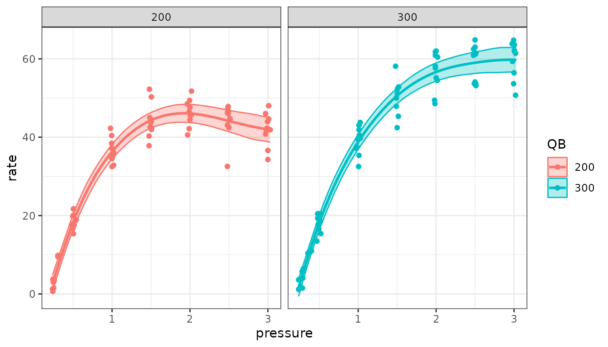
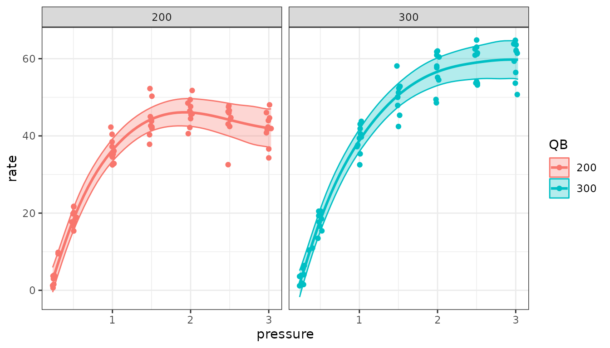
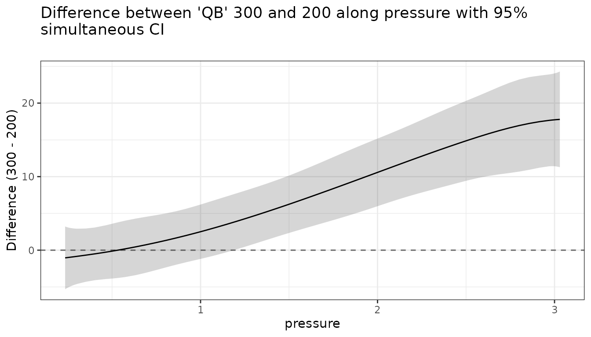
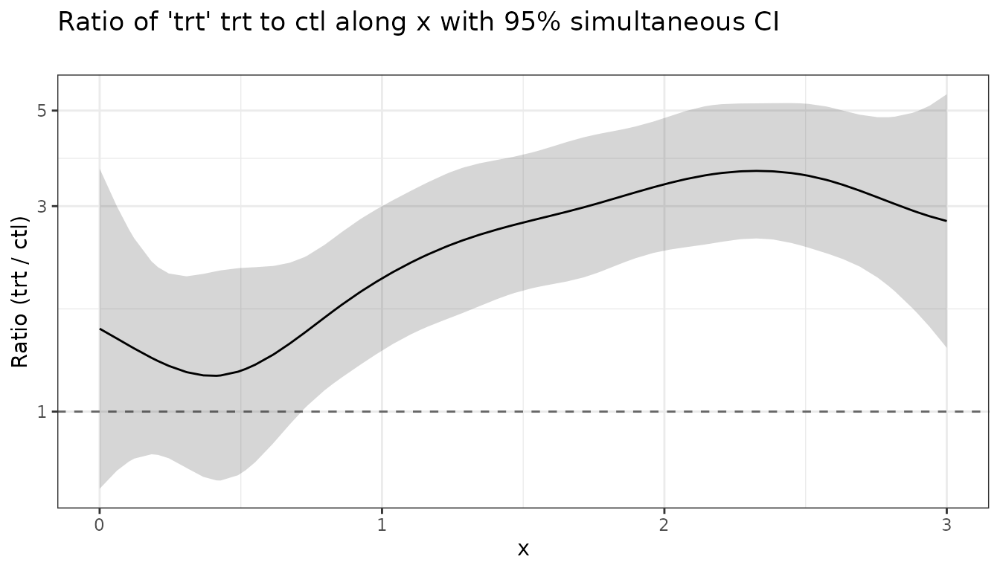
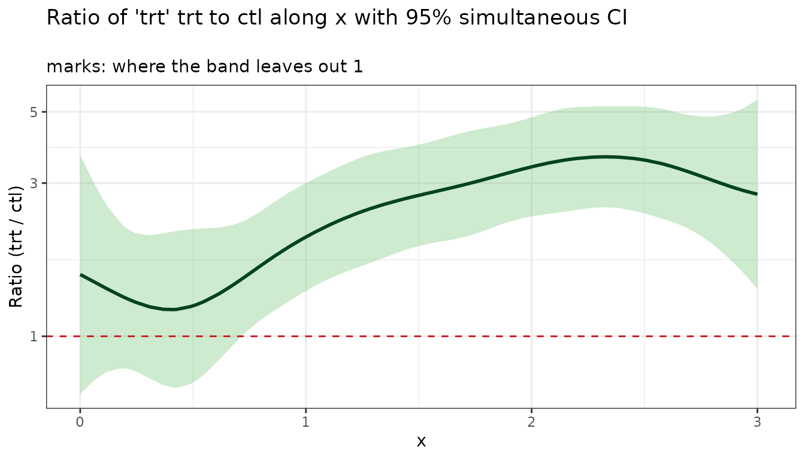

When a response changes with a covariate along a curve whose shape is
not known, semireg() fits it as a penalized spline inside a
linear or generalized linear mixed model (Ruppert, Wand and Carroll
2003). The spline’s wiggly part is a random effect, so the amount of
smoothing is estimated by REML along with the other variance components,
and the usual mixed-model tools apply. Smooths are written in the model
formula, as for mgcv::gam(), next to fixed and lme4 random
terms. semipred() predicts the curves with confidence
bands; predictmeans() gives means and comparisons of factor
levels with the smooth included.
Data and model
The Dialyzer data (package nlme) give the
ultrafiltration rate of 20 dialyzers at seven transmembrane pressures,
at two blood flow rates (QB, 200 or 300 dl/min).
library(predictmeans)
data(Dialyzer, package = "nlme")
Dialyzer <- as.data.frame(Dialyzer)The rate rises with pressure and levels off. The model has a curve
for each blood flow rate, s(pressure, by = QB), and a
random intercept and slope for each dialyzer:
fm <- semireg(rate ~ s(pressure, by = QB, bs = "os", k = 4) + (pressure | Subject),
data = Dialyzer, prt = FALSE)bs = "os" is the O’Sullivan penalized spline (Wand and
Ormerod 2008) with k interior knots; any mgcv basis can be
used instead (the default is a thin plate spline). Each curve is split
into a straight line, whose terms (QB + QB:pressure) are
added to the fixed effects automatically, and a smooth departure from
it, a block of random effects with its own variance.
| Written | Meaning |
|---|---|
s(x) |
one curve |
s(x, by = f) |
a curve per level of f, a variance each
(id = 1: one shared) |
s(x, by = z), z numeric |
varying coefficient |
s(x, f) |
common curve + a deviation curve per level of f
|
s(x, f1*f2) |
common curve + deviations for f1, f2,
f1:f2, a variance each |
s(x1, x2), s(x1, x2, bs = "ztps")
|
surface |
(s(x, k = 10) \| g) |
random curve per subject: (x \| g) + a spline
deviation |
?semireg has the full table. anova(fm)
gives the tests of the fixed effects (Type III, Kenward-Roger df) and,
for each smooth term, the likelihood ratio test of its variance being
zero: a significant smooth term means the curve is not a straight
line.
anova(fm)
#> Analysis of Deviance Table (Type III Wald F tests with Kenward-Roger df)
#>
#> Response: rate
#> F Df Df.res Pr(>F)
#> (Intercept) 212.0332 1 19.128 8.354e-12 ***
#> QB 7.4995 1 19.128 0.013 *
#> QB:pressure 850.3842 2 19.129 < 2.2e-16 ***
#> ---
#> Signif. codes: 0 '***' 0.001 '**' 0.01 '*' 0.05 '.' 0.1 ' ' 1
#>
#> Smooth terms: likelihood ratio tests of variance = 0 (the curve is its straight-line part);
#> p-values halved for the boundary (chi-square 0:1)
#> term variance logLik logLik.without LRT p.value
#> s_pressure_QB200 28.92 -355.6 -476.4 241.5 <2e-16
#> s_pressure_QB300 24.53 -355.6 -468.3 225.3 <2e-16Curves with confidence bands
cur <- semipred(fm, "QB", "pressure", prt = FALSE)
head(cur$pred_df)
#> QB pressure SE rate LL UL
#> 1 200 0.235 1.0383074 2.720144 0.6850986 4.755189
#> 2 200 0.240 1.0224163 3.029839 1.0259401 5.033738
#> 3 200 0.245 1.0080322 3.339669 1.3639617 5.315375
#> 4 200 0.250 0.9950291 3.649587 1.6993659 5.599808
#> 5 200 0.255 0.9832854 3.959550 2.0323462 5.886754
#> 6 200 0.260 0.9726852 4.269514 2.3630858 6.175942
cur$plt
The band is pointwise: at each pressure it covers the true curve with
95% probability (level = 0.05). Before version 2.0 these
limits were 90% limits; level = 0.1 gives them.
A simultaneous band covers the whole curve at once with 95% probability, so it is wider. Use it to judge the shape of the curve over its whole range:
sim <- semipred(fm, "QB", "pressure", simultaneous = TRUE, prt = FALSE)
crit <- (sim$pred_df$UL - sim$pred_df$rate) / sim$pred_df$SE
c(pointwise = qnorm(0.975), simultaneous = crit[1])
#> pointwise simultaneous
#> 1.959964 2.953853
sim$plt
The critical value comes from 10,000 draws of the estimates’ distribution, with a fixed seed, so the band is the same each time.
Where do the curves differ?
contr gives the difference between two curves, here 300
minus 200 dl/min, with its band. Where a simultaneous band excludes
zero, the curves differ, with the error rate controlled over the whole
range of pressures. Here the higher blood flow rate gives a higher
ultrafiltration rate from a pressure of about 1.2 upwards:

Means of factor levels
predictmeans() accepts a semireg() fit. The
means of the blood flow rates include the smooth (as
semipred() gives at the same pressure), at the mean
pressure or at values given by name:
predictmeans(fm, "QB")
#> Predicted means of 'QB' from a semireg model (smooth terms included)
#>
#> QB estimate std.error df conf.low conf.high group
#> 200 44.66 0.9740 29.44 42.66 46.65 A
#> 300 51.21 0.9723 29.24 49.22 53.20 B
#>
#> Pairwise comparisons (t tests, Satterthwaite df; p.adj: none)
#>
#> level1 level2 estimate std.error df statistic p.value p.adj p.method
#> 200 300 -6.557 1.376 29.36 -4.764 4.749e-05 4.749e-05 t
predictmeans(fm, "QB", covariate = c(pressure = 1))$means
#> QB estimate std.error df conf.low conf.high group
#> 1 200 36.30263 0.9244804 36.51477 34.42861 38.17664 A
#> 2 300 38.81293 0.9262667 36.68683 36.93559 40.69026 AFor gaussian fits the tests are t tests with Satterthwaite df (next
section); for generalized fits they are normal-based, as in
semipred().
What predictmeans adds
A smoothing program (mgcv::gam(), gamm4) fits these
models too. predictmeans adds the mixed-model inference around them.
Means at a covariate value in a designed experiment.
Three treatments on the whole plots of six blocks, measured at eleven
times; a curve over time for each treatment. The treatment means at time
5 include the curves’ random coefficients, and their comparisons rest on
the whole-plot variation, so they have far fewer degrees of freedom than
the 180 residual df. predictmeans gives them Satterthwaite df for the
combination of fixed and smooth coefficients (as SAS does for estimates
that involve random effects); normal-based tests would reject a true
null hypothesis too often (dev/sim-semireg-df.R in the
package sources).
set.seed(11)
sp <- expand.grid(t = 0:10, A = factor(c("a1", "a2", "a3")), Block = factor(1:6))
sp$y <- 2 + sin(sp$t/2) + c(0, 0.5, 1)[sp$A]*sp$t/10 + rnorm(6, 0, 0.5)[sp$Block] +
rnorm(18, 0, 0.4)[interaction(sp$Block, sp$A)] + rnorm(nrow(sp), 0, 0.3)
fsp <- semireg(y ~ s(t, by = A, bs = "os", k = 6) + (1 | Block) + (1 | Block:A),
data = sp, prt = FALSE)
pm <- predictmeans(fsp, "A", covariate = c(t = 5), pairwise = TRUE)
pm$means
#> A estimate std.error df conf.low conf.high group
#> 1 a1 2.353834 0.2423023 8.655220 1.802361 2.905306 A
#> 2 a2 2.415646 0.2431558 8.777611 1.863457 2.967834 A
#> 3 a3 2.695334 0.2426143 8.699969 2.143604 3.247064 A
pm$pairs[c("level1", "level2", "estimate", "std.error", "df", "p.value")]
#> level1 level2 estimate std.error df p.value
#> 1 a1 a2 -0.06181205 0.1991743 17.56558 0.7599533
#> 2 a1 a3 -0.34150024 0.1985129 17.33696 0.1031776
#> 3 a2 a3 -0.27968819 0.1995537 17.69918 0.1783368The smooth terms are written in the formula:
s(t, by = A) adds the fixed terms A + A:t (the
straight lines) itself.
Which differences between curves are needed? In
s(x, f1*f2) the curves are a common curve plus deviation
curves for f1, f2 and f1:f2, each
with its own variance. anova() tests each variance (the
likelihood ratio, halved for the boundary) and varcomp()
shows their sizes. Here the shapes differ by f1 only:
set.seed(1)
dd <- expand.grid(x = seq(0, 1, length = 25), f1 = factor(c("p", "q")),
f2 = factor(c("u", "v", "w")), rep = 1:4)
dd$id <- interaction(dd$f1, dd$f2, dd$rep)
dd$y <- sin(2*pi*dd$x) + (dd$f1 == "q")*1.5*sin(pi*dd$x)^2 +
rnorm(nlevels(dd$id), 0, 0.2)[dd$id] + rnorm(nrow(dd), 0, 0.25)
fx <- semireg(y ~ s(x, f1*f2, bs = "os", k = 8) + (1 | id), data = dd, prt = FALSE)
anova(fx)$smooth[c("term", "variance", "LRT", "p.value")]
#> term variance LRT p.value
#> 1 s_x 0.3163539389 5.7060123 8.453451e-03
#> 2 s_x_f1 0.0927799765 26.9861474 1.024594e-07
#> 3 s_x_f2 0.0000000000 0.0000000 5.000000e-01
#> 4 s_x_f1_f2 0.0002386318 0.1328028 3.577718e-01The test is conservative: in 200 simulated data sets like these, with
no f2 or f1:f2 differences, it rejected at the
5% level in 1-3% of them, and it found the f1 difference in
all (dev/sim-semireg-lrt.R). permlmer() on
fx$semer gives a permutation test when a level closer to 5%
matters.
Counts: rate ratios between curves.
semireg_tmb() fits the same smooths with glmmTMB, so a
negative binomial with zero inflation is available. contr
gives the difference of two curves on the log scale and as a ratio, with
a simultaneous band and the ranges where the ratio differs from 1:
set.seed(5)
cn <- expand.grid(x = seq(0, 3, length = 30), trt = factor(c("ctl", "trt")), site = factor(1:8))
cn$y <- rnbinom(nrow(cn), size = 3,
mu = exp(1 + sin(cn$x) + (cn$trt == "trt")*0.5*cn$x + rnorm(8, 0, 0.3)[cn$site]))
cn$y[runif(nrow(cn)) < 0.1] <- 0
fc <- semireg_tmb(y ~ s(x, by = trt, bs = "os", k = 6) + (1 | site), ziformula = ~ 1,
family = glmmTMB::nbinom2, data = cn, prt = FALSE)
rr <- semipred(fc, "trt", "x", contr = c("trt", "ctl"), band = "simultaneous", prt = FALSE)
attr(rr$pred_df, "significant")
#> from to direction
#> 1 0.7241379 3 >
rr$plt
Subject-specific curves.
(s(age, k = 10) | idnum) gives each subject a random
straight line, (age | idnum), and a random spline deviation
with one variance for all subjects (Durban et al. 2005). The heights of
28 black boys of the Indiana growth study, in the package’s data, fitted
as in Harezlak, Ruppert and Wand (2018, section 9.2); the fit is the
same as that of their nlme::lme() code:
gi <- read.table(system.file("extdata", "semireg", "growthIndiana.txt", package = "predictmeans"),
header = TRUE)
gb <- subset(gi, male == 1 & black == 1)
gb$idnum <- factor(gb$idnum)
fg <- semireg(height ~ s(age, bs = "os", k = 20, xt = list(range = c(5.5, 20))) +
(s(age, k = 10, xt = list(range = c(5.5, 20))) | idnum), data = gb, prt = FALSE)
logLik(fg$semer)
#> 'log Lik.' -935.7451 (df=8)
semipred(fg, "age", "age", prt = FALSE)$plt
The population curve leaves out the subjects’ curves;
anova(fg) would test whether they are needed beyond
straight lines.
From the smoothZ form
Code written for 1.x, with the smooths in
smoothZ = list(smZ(...)) and their straight lines written
in the formula, still runs and gives the same fits. The formula form
gives the same model and adds the fixed terms itself:
| 1.x | 2.0 |
|---|---|
y ~ x, smoothZ = list(sm = smZ(x, k = 10)) |
y ~ s(x, bs = "os", k = 10) |
y ~ x*f, smoothZ = list(sm = smZ(x, k = 10, by = f, group = TRUE)) |
y ~ s(x, by = f, bs = "os", k = 10) |
y ~ x*f, smoothZ = list(sm = smZ(x, k = 10, by = f)) |
y ~ s(x, by = f, bs = "os", k = 10, id = 1) |
y ~ x1 + x2, smoothZ = list(sm = smZ(cbind(x1, x2), type = "Ztps")) |
y ~ s(x1, x2, bs = "ztps") |
smZ(x, intKnots = kn, range.x = r) |
s(x, bs = "os", xt = list(knots = kn, range = r)) |
Smooths are given either in the formula or in smoothZ,
not both. Other changes since 1.x: the optimizer is
nloptwrap
(control = lmerControl(optimizer = "bobyqa") gives 1.x’s),
semipred() limits are 95% (1.x: 90%),
anova(fit) replaces lmerTest, and generalized fits include
the uncertainty of the smoothing parameters in their bands.
More
-
?semireg,?semipred,?smZ;semireg_tmb()fits the same models with glmmTMB, which also allows negative binomial and other families. - The worked examples on the package website use larger data sets (apartment prices, school scores, respiratory infections, pollen counts and a spatial smooth of copper grades).
References
Durban, M., Harezlak, J., Wand, M. P. and Carroll, R. J. (2005). Simple fitting of subject-specific curves for longitudinal data. Statistics in Medicine, 24, 1153-1167.
Harezlak, J., Ruppert, D. and Wand, M. P. (2018). Semiparametric Regression with R. Springer.
Ruppert, D., Wand, M. P. and Carroll, R. J. (2003). Semiparametric Regression. Cambridge University Press.
Wand, M. P. and Ormerod, J. T. (2008). On semiparametric regression with O’Sullivan penalized splines. Australian and New Zealand Journal of Statistics, 50, 179-198.